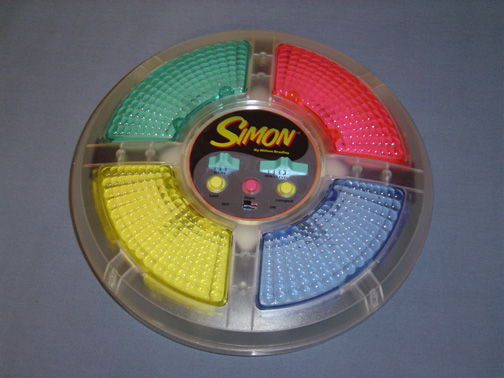

This is not just another Simon Game application, but it is an unusual one. It's been built thinking in making it accessibly to everyone, specially to blind people.
You can listen this text as well as reading it. There are sounds to help blind people to play the game and there are instructions about the composition and structure of the visual elements.
As a plus, you can turn black all elements in this application and try to play it as a blind person will do.
At the top of the screen, from left to right, you have a fixed menu of four links: the Simon logo which links to the playing page, a Home link linking to this one, a Log in link to log into the application, and finally an About link which contains information about Simon Game history and this application.

Now, if you want to continue to the next screen to know some instructions about the game you can press the button at the lower part of this screen.
As a part of the structure of this page to make it accesible to blind people, buttons are big and go from side to side of the screen, and usually are placed at the bottom
If you prefer it, you can start playing straight away pressing over the SIMON logo at the top left corner of your device.